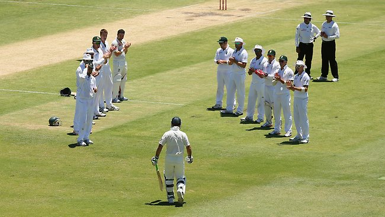
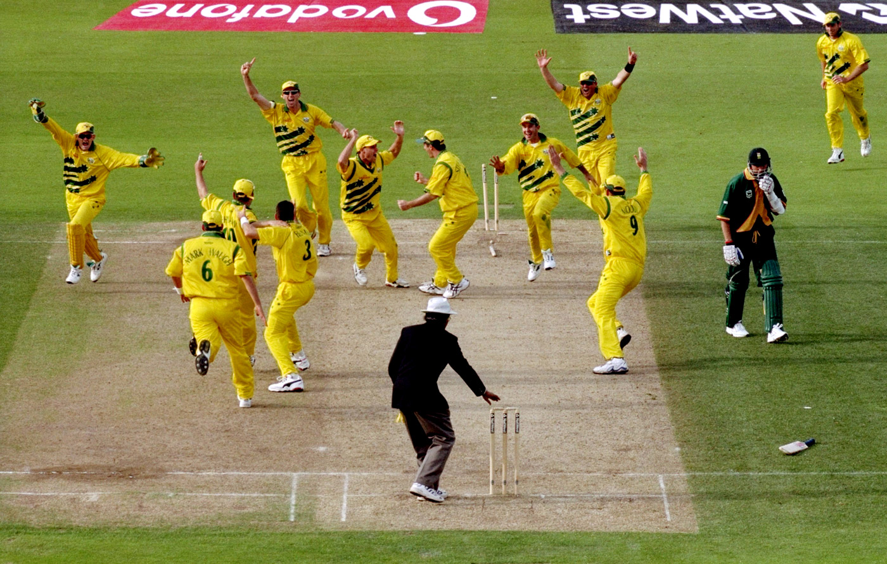
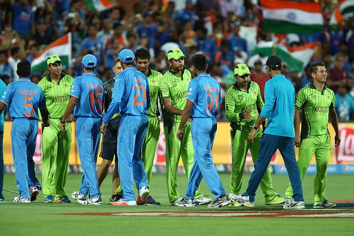
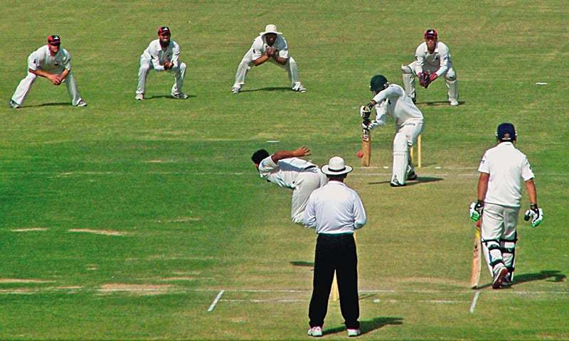
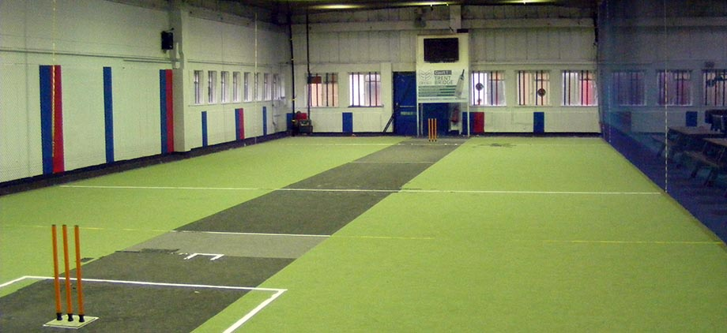

Test cricket is the highest standard of
first-class cricket. A Test match is an international fixture between teams
representing those countries that are Full Members of the ICC.

Test matches:
Between two teams are usually played in a group of matches called a "series".
Matches last up to five days and a series normally consists of three to five
matches. Test matches that are not finished within the allotted time are drawn.
Standard limited overs :Cricket was introduced in
England in the 1963 season in the form of a knockout cup contested by the
first-class county clubs. In 1969, a national league competition was
established. The concept was gradually introduced to the other major cricket
countries and the first limited overs international was played in 1971. In 1975,
the first Cricket World Cup took place in England. Limited overs cricket has
seen various innovations including the use of multi-coloured kit and floodlit
matches using a white ball.

A "one day match"
: Named so because each match
is scheduled for completion in a single day, is the most common form of limited
overs cricket played on an international level. In practice, matches sometimes
continue on a second day if they have been interrupted or postponed by bad
weather. The main objective of a limited overs match is to produce a definite
result and so a conventional draw is not possible, but matches can be undecided
if the scores are tied or if bad weather prevents a result. Each team plays one
innings only and faces a limited number of overs, usually a maximum of 50. The
Cricket World Cup is held in one day format and the last World Cup in 2007 was
won by Australia. The next World Cup will hosted by India, Bangladesh and Sri
Lanka in 2011.

Twenty20
: Is a new variant of limited overs itself with the purpose being
to complete the match within about three hours, usually in an evening session.
The original idea, when the concept was in introduced England in 2003, was to
provide workers with an evening entertainment. It has been commercially
successful and has been adopted internationally. The inaugural Twenty20 World
Championship was held in 2007 and won by India. 2009's Twenty20 World
Championship was staged in England and won by Pakistan. After the inaugural ICC
World Twenty20 many domestic Twenty20 leagues were born. First of them was
Indian Cricket League which is considered as rebel league since it is
unauthorized by BCCI and led to form an official league called the Indian
Premier League. Both these leagues are cash rich and attracted players and
audience around the globe. Recently Twenty20 Champions League was formed as a
tournament for domestic clubs of various countries.

First-class cricket
: Includes Test cricket but the term is generally used to refer
to the highest level of domestic cricket in those countries with full ICC
membership, although there are exceptions to this. First-class cricket in
England is played for the most part by the 18 county clubs which contest the
County Championship. The concept of a champion county has existed since the 18th
century but the official competition was not established until 1890. The most
successful club has been Yorkshire County Cricket Club with 30 official titles.

Indoor cricket:
Is
played in a netted, indoor arena, and is quite formal but most of the outdoor
variants are very informal.